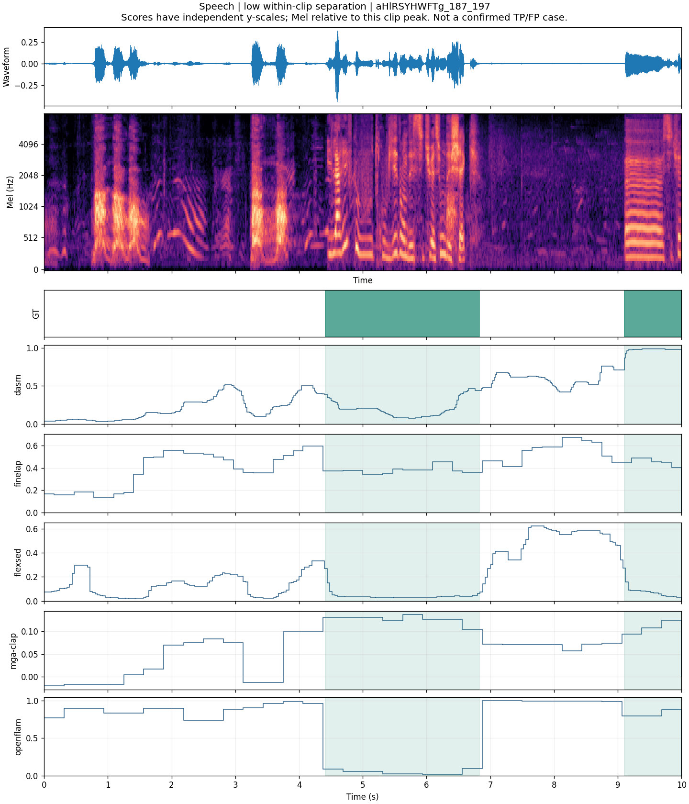
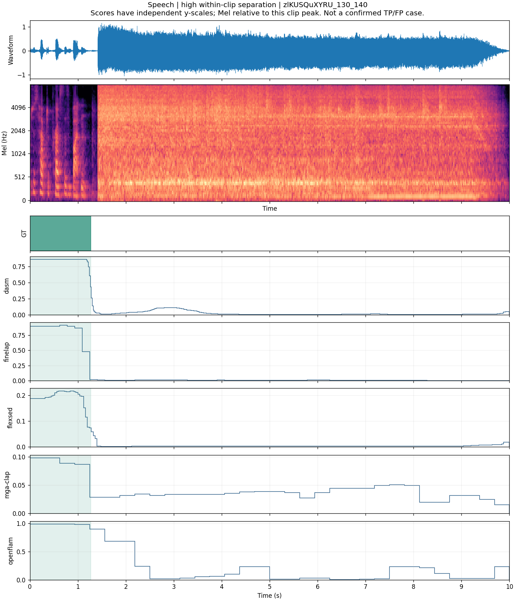
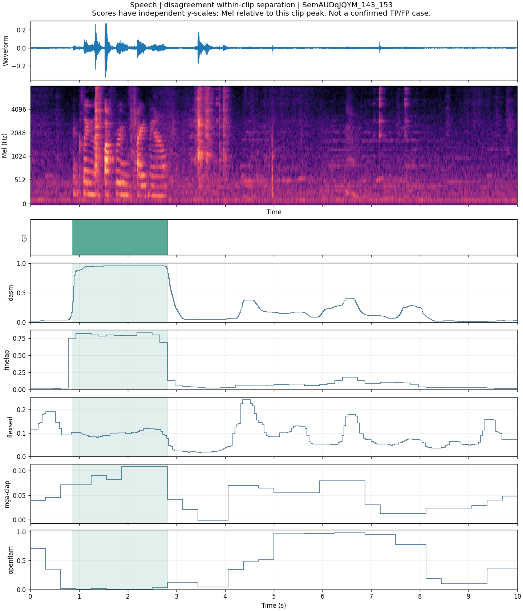
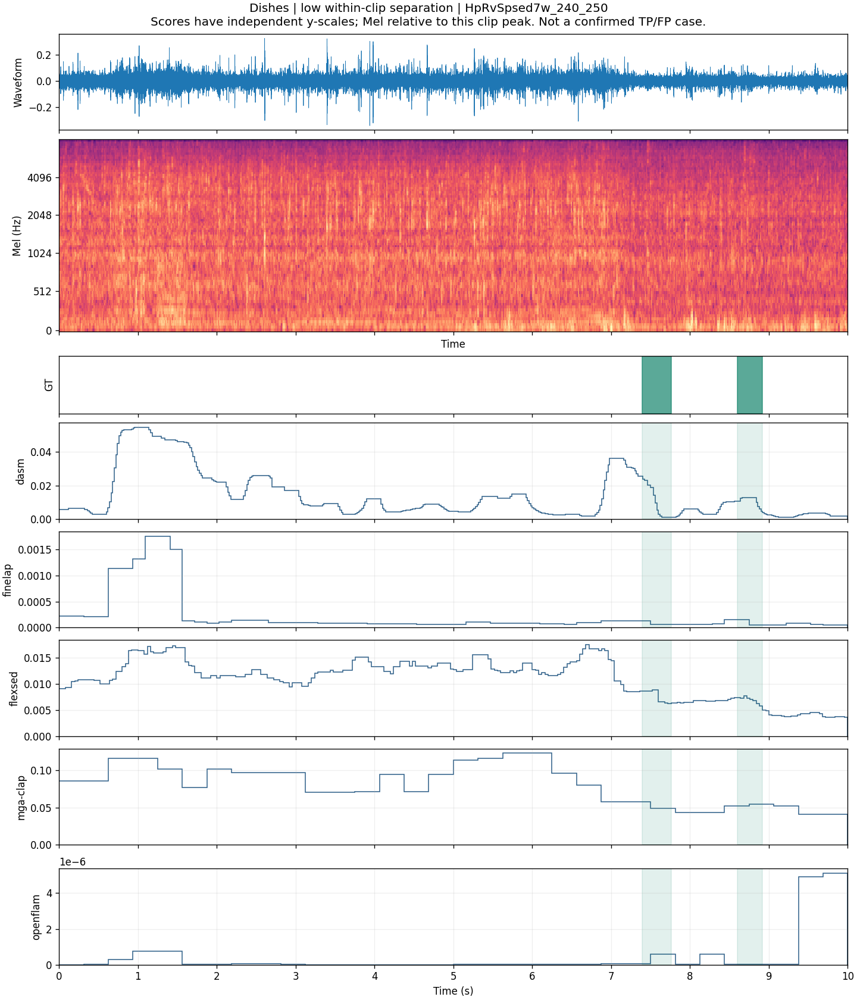
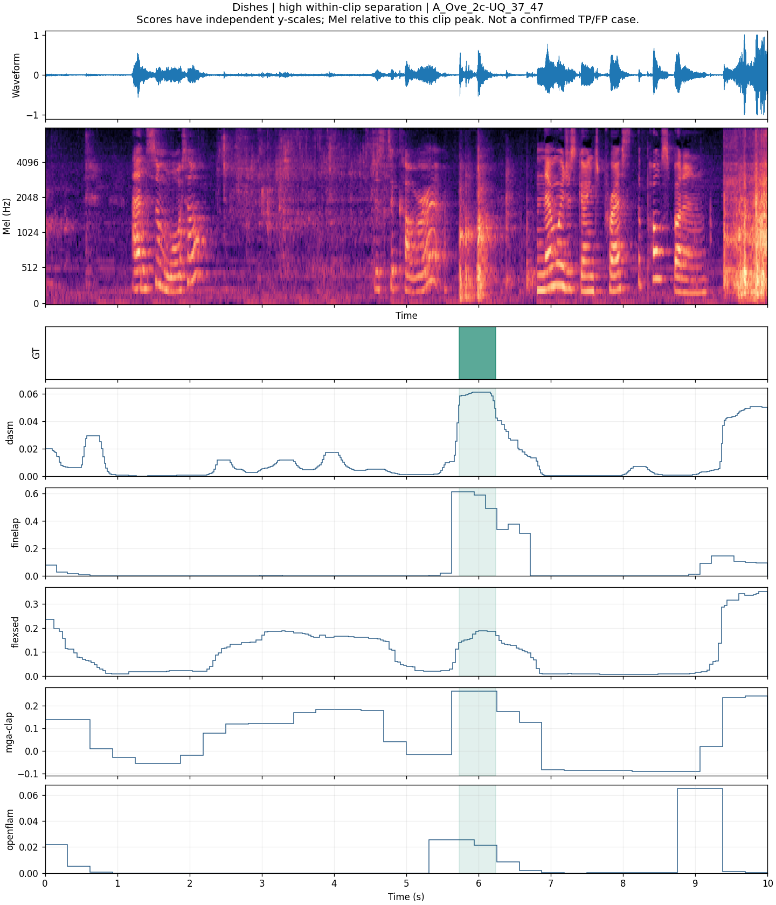
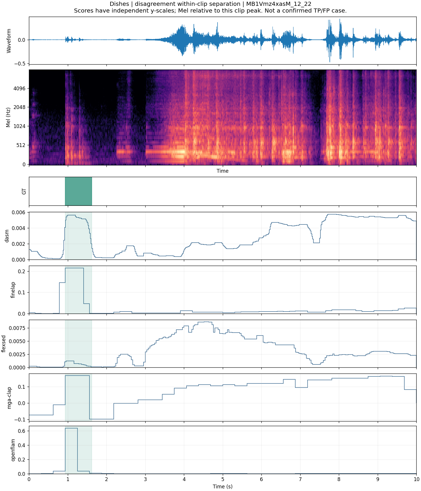

Speech · low
aHlRSYHWFTg_187_197 · 片内 AUC 中位数 0.339 · 人工复核待完成

692 条公开测试音频。案例按片内时间 AUC 的共同高分、共同低分与模型差异挑选，供探索，不代表总体错误比例。音频尚待人工听辨；不同模型纵轴独立。GT 为绿色区间。
修订：已撤下任意阈值和预测区间，撤回基于这些区间的边界、误报或漏报横向判断。此页仅展示真值与连续响应；正式阈值须在验证集按统一规则选定。
aHlRSYHWFTg_187_197 · 片内 AUC 中位数 0.339 · 人工复核待完成

zlKUSQuXYRU_130_140 · 片内 AUC 中位数 1.000 · 人工复核待完成

SemAUDqJQYM_143_153 · 片内 AUC 中位数 0.982 · 人工复核待完成

HpRvSpsed7w_240_250 · 片内 AUC 中位数 0.346 · 人工复核待完成

A_Ove_2c-UQ_37_47 · 片内 AUC 中位数 1.000 · 人工复核待完成

MB1Vmz4xasM_12_22 · 片内 AUC 中位数 0.820 · 人工复核待完成
